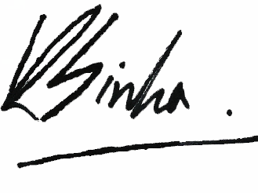

Dear Delegates and Faculty Advisors,
It is my distinct privilege to welcome you to the Second Session of the Cambridge Model United Nations, to be held from 14th to 16th February 2013. After the prodigious success of CAMUN 2012, my team and I are filled with optimism and excitement as we embark upon the journey to CAMUN 2013. The staff is hard at work making preparations for another successful simulation of efficient United Nations bodies and multifarious international organisations.
In celebration of 2013 being the ‘International Year of Water Cooperation’, our theme for this year is ‘Collaboration: A Nest for the Future.’ We wish to promote the eradication of today’s problems for a better tomorrow, through a collective effort.
Persian scholar Rumi once said “Don’t be satisfied with … how things have gone with others. Unfold your own myth, without complicated explanation.” Delegates, I encourage each and every one of you to collect your individual ideas and combine them to form pertinent yet
avant-garde solutions. We look forward to welcoming you in February 2013.
Sincerely,

Ritvik Sinha,
Secretary-General,
Cambridge Model United Nations 2013 |